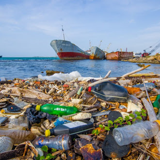
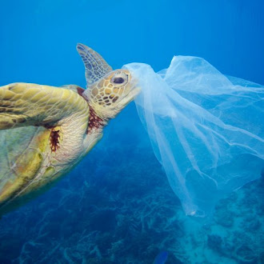

O Problema que Afoga a Vida Marinha
A poluição dos oceanos, principalmente por plástico, é uma ameaça silenciosa que afeta milhões de animais. Eles confundem os detritos com alimentos, causando ferimentos e até a morte. Esse problema exige a nossa atenção e ação imediata.

Animais como esta tartaruga sofrem com a poluição plástica. Suas vidas estão em jogo.
Consequências Devastadoras
O lixo que descartamos de forma irresponsável viaja por rios e ventos até chegar ao mar. Esse processo não só mata os animais, mas também contamina a cadeia alimentar, afetando inclusive a nossa saúde.

Um futuro onde a vida marinha possa prosperar sem o risco da poluição é possível com a nossa ajuda.
Como Você Pode Fazer a Diferença
- Reduza: Diminua o consumo de plástico descartável (canudos, sacolas, copos).
- Reutilize: Prefira produtos reutilizáveis, como garrafas de água e sacolas de tecido.
- Recicle: Separe seu lixo corretamente para que ele seja reciclado.
- xConscientize: Compartilhe informações e eduque as pessoas ao seu redor sobre o problema.